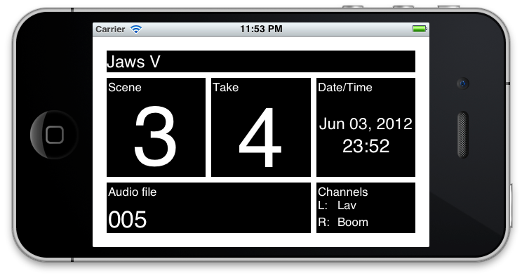
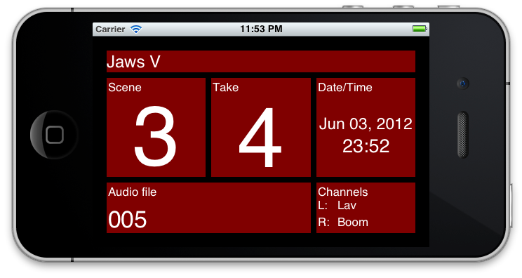
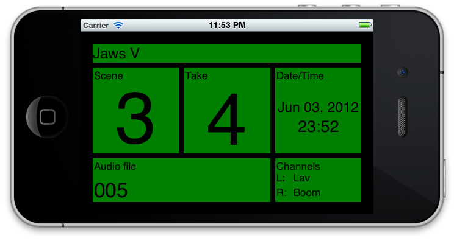

No Budget Movie Slate for iOS (iPhone and iPad)
Swipe left or right to slate. Swipe up or down on the scene/take/audio file to auto increment/decrement the field.
This iOS app was designed to present just the most pertinent information required when shooting a movie with a secondary audio source. The fields presented are the following:
- Scene number
- Take number
- Audio file name
- Left/right audio channel labels
- Production name
- Date/time
Screenshots:
The slate initially looks like this:

After swiping horizontally, a countdown starts. A pulse sound is played and the slate flashes colors so that external audio can be matched to the video:

After the countdown ends, the app flashes as in the screenshot below, and another sound is played to help match audio/video:

Support
If you run into problems with the app, please contact Matt McKenna.